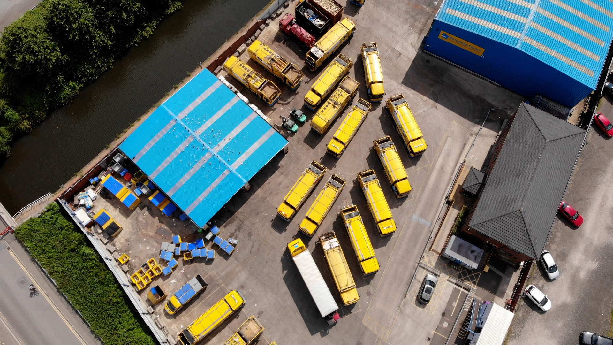

About Manchester Recycling
Welcome to Manchester Recycling, a non-profit organization committed to fostering a sustainable future for the vibrant city of Manchester. At the heart of our mission is the belief that every small act of recycling contributes to a healthier environment and a stronger community.
Our Mission
Empowering Communities: We aim to empower Manchester's households with the knowledge and resources to make informed choices about waste management. By promoting responsible recycling practices, we strive to create a community that actively participates in reducing its environmental impact.
Why Recycling Matters
Manchester Recycling recognizes the critical role recycling plays in conserving natural resources, reducing landfill waste, and mitigating the effects of climate change. By embracing recycling, we not only enhance the well-being of our city but also set the stage for a sustainable legacy for generations to come.
What Sets Us Apart
Non-Profit Commitment: As a non-profit organization, Manchester Recycling is driven by a commitment to public welfare rather than profit. Every initiative we undertake is rooted in the desire to create positive change and promote environmental stewardship.
Community Engagement: We believe in the power of community collaboration. Through educational programs, workshops, and outreach events, we actively engage with residents to build a collective understanding of the impact of recycling on our local environment.
Get Involved
Join us on our journey to transform Manchester into a greener, more eco-conscious city. Whether you're a resident looking to enhance your recycling habits or a business seeking sustainable solutions, Manchester Recycling provides the support and resources you need.